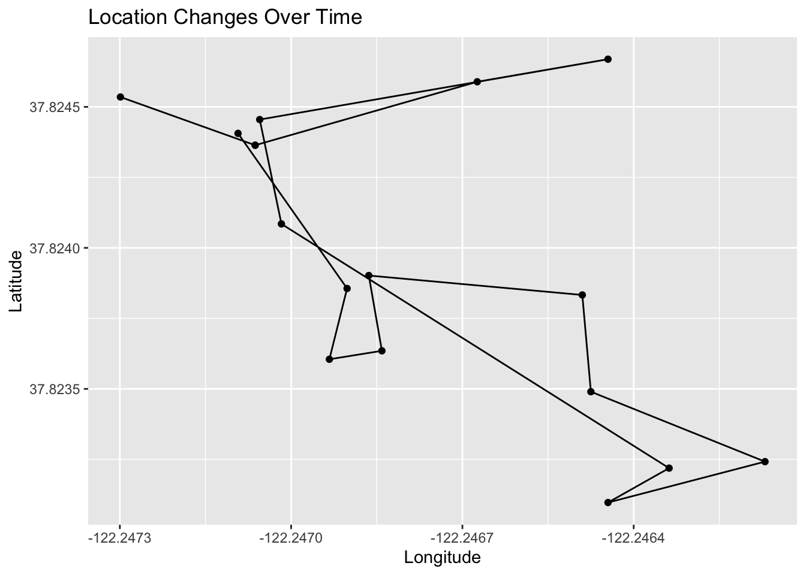
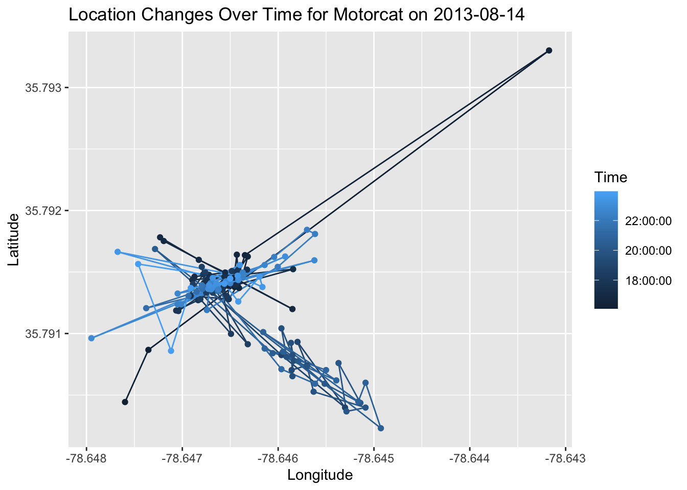
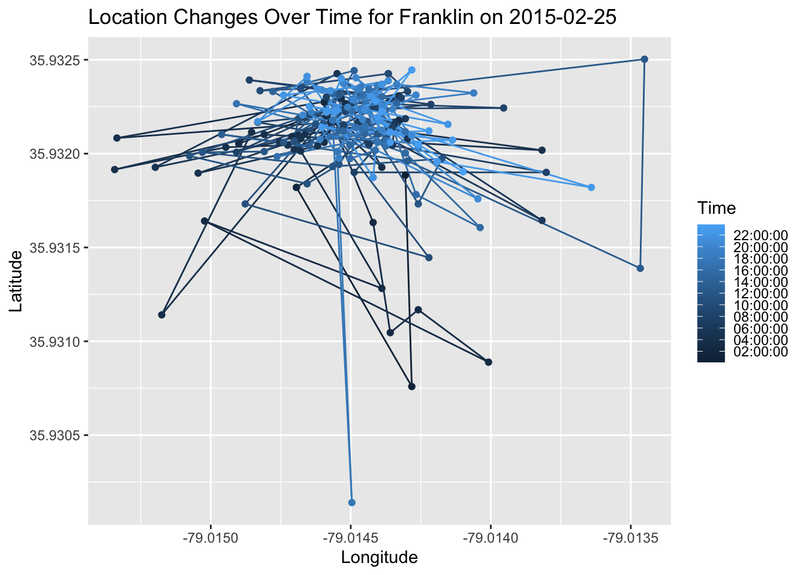
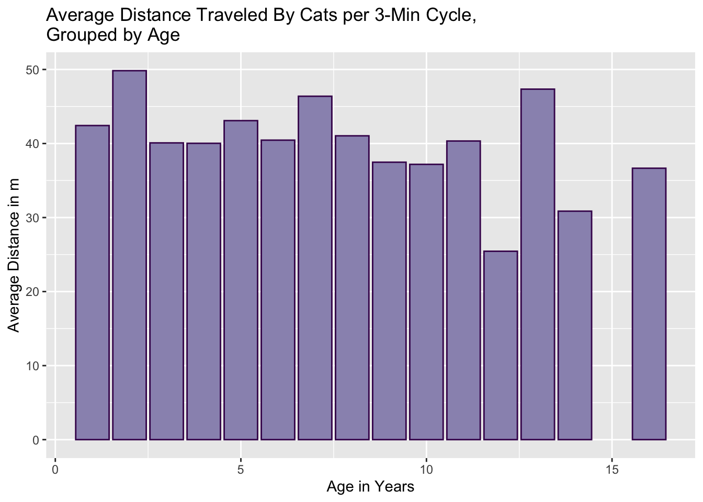

# Put all necessary libraries here
library(tidyverse)
library(dplyr)
library(readr)
library(ggplot2)
library(sf)
library(tmap)
library(shiny)
library(lubridate)
library(viridis)
library(scales)Practice Code
#Pulling data from csv files
cat_movement <- read_csv("data/cats_us.csv")
cat_reference <- read_csv("data/cats_us_reference.csv")#Tidying up the date and time variables in both dataframes
cat_movement <- cat_movement %>%
mutate(Time = format(as.POSIXct(timestamp),
format = "%H:%M:%S"),
Date = as.Date(timestamp)) %>%
filter(visible) %>%
subset(select = -timestamp)
cat_reference <- cat_reference %>%
mutate(`Date-Deploy-On` = as.Date(`deploy-on-date`),
`Time-Deploy-On` = format(as.POSIXct(`deploy-on-date`),
format = "%H:%M:%S"),
`Date-Deploy-Off` = as.Date(`deploy-off-date`),
`Time-Deploy-Off` = format(as.POSIXct(`deploy-off-date`),
format = "%H:%M:%S")) %>%
subset(select = -`deploy-off-date`) %>%
subset(select = -`deploy-on-date`)
#ordering data alphabetically by animal id
cat_reference <- cat_reference[order(cat_reference$`animal-id`), ]#Separating the movement dataset by cat
filter_individual <- function(data, identifier) {
filtered_data <- filter(data, `individual-local-identifier` == identifier)
return(filtered_data)
}
Ajax2 <- filter_individual(cat_movement, "Ajax2")
Anubis <- filter_individual(cat_movement, "Anubis2")
Asher2 <- filter_individual(cat_movement, "Asher2")
Asibo2 <- filter_individual(cat_movement, "Asibo2")
Atticus <- filter_individual(cat_movement, "Atticus")
Aya2 <- filter_individual(cat_movement, "Aya2")
BabyKitty <- filter_individual(cat_movement, "Baby Kitty 2")
Banjo2 <- filter_individual(cat_movement, "Banjo2")
Bean2 <- filter_individual(cat_movement, "Bean2")
Beatle2 <- filter_individual(cat_movement, "Beatle2")
Bela2 <- filter_individual(cat_movement, "Bela2")
Bella2 <- filter_individual(cat_movement, "Bella2")
Beluga <- filter_individual(cat_movement, "Beluga")
Benny <- filter_individual(cat_movement, "Benny")
BillyWhiskers <- filter_individual(cat_movement, "Billy Whiskers2")
Bongo2 <- filter_individual(cat_movement, "Bongo2")
BooBooKitty <- filter_individual(cat_movement, "BooBooKitty")
Boris2 <- filter_individual(cat_movement, "Boris2")
Bumbles2 <- filter_individual(cat_movement, "Bumbles2")
CaptainAmerica <- filter_individual(cat_movement, "Captain America 2")
CatMarshall <- filter_individual(cat_movement, "Cat Marshall")
CatnissEverdeen <- filter_individual(cat_movement, "Catniss Everdeen")
Cayden2 <- filter_individual(cat_movement, "Cayden2")
Cedar2 <- filter_individual(cat_movement, "Cedar2")
Chester2 <- filter_individual(cat_movement, "Chester2")
Climber2 <- filter_individual(cat_movement, "Climber2")
Coal <- filter_individual(cat_movement, "Coal")
Conan <- filter_individual(cat_movement, "Conan")
Diamond2 <- filter_individual(cat_movement, "Diamond2")
DonCarlos <- filter_individual(cat_movement, "Don Carlos2")
DonaldFluffypants <- filter_individual(cat_movement, "Donald Fluffypants")
Douglas <- filter_individual(cat_movement, "Douglas")
Elle <- filter_individual(cat_movement, "Elle")
Emmy2 <- filter_individual(cat_movement, "Emmy2")
FenimoreCooper <- filter_individual(cat_movement, "Fenimore Cooper2")
Fiona2 <- filter_individual(cat_movement, "Fiona2")
Fletcher2 <- filter_individual(cat_movement, "Fletcher2")
Frank <- filter_individual(cat_movement, "Frank")
Franklin <- filter_individual(cat_movement, "Franklin")
George2 <- filter_individual(cat_movement, "George2")
Gianni2 <- filter_individual(cat_movement, "Gianni2")
Goliath2 <- filter_individual(cat_movement, "Goliath2")
Gracie <- filter_individual(cat_movement, "Gracie")
GracieL2 <- filter_individual(cat_movement, "Gracie L2")
Hailey2 <- filter_individual(cat_movement, "Hailey2")
Harley2 <- filter_individual(cat_movement, "Harley2")
Hemingway <- filter_individual(cat_movement, "Hemingway")
Herman2 <- filter_individual(cat_movement, "Herman2")
Hershey <- filter_individual(cat_movement, "Hershey")
Jack2 <- filter_individual(cat_movement, "Jack2")
Jams2 <- filter_individual(cat_movement, "Jams2")
Jello2 <- filter_individual(cat_movement, "Jello2")
Jetpack <- filter_individual(cat_movement, "Jetpack")
Jingles2 <- filter_individual(cat_movement, "Jingles2")
Jitterbug2 <- filter_individual(cat_movement, "Jitterbug2")
Joey <- filter_individual(cat_movement, "Joey")
Junior2 <- filter_individual(cat_movement, "Junior2")
Justice <- filter_individual(cat_movement, "Justice")
Kagin2 <- filter_individual(cat_movement, "Kagin2")
KatnissEverdeen <- filter_individual(cat_movement, "Katniss Everdeen")
Lacey <- filter_individual(cat_movement, "Lacey")
Ladybird2 <- filter_individual(cat_movement, "Ladybird2")
Leopard2 <- filter_individual(cat_movement, "Leopard2")
Lester <- filter_individual(cat_movement, "Lester")
Little2 <- filter_individual(cat_movement, "Little2")
LouieTag <- filter_individual(cat_movement, "LouieTag")
Lucky2 <- filter_individual(cat_movement, "Lucky2")
Luna2 <- filter_individual(cat_movement, "Luna2")
Lupe2 <- filter_individual(cat_movement, "Lupe2")
Maddie2 <- filter_individual(cat_movement, "Maddie2")
Maisey2 <- filter_individual(cat_movement, "Maisey2")
Marco2 <- filter_individual(cat_movement, "Marco2")
MarthaWayne2 <- filter_individual(cat_movement, "Martha Wayne2")
Merrie2 <- filter_individual(cat_movement, "Merrie2")
Mia2 <- filter_individual(cat_movement, "Mia2")
Milo <- filter_individual(cat_movement, "Milo")
Mindy2 <- filter_individual(cat_movement, "Mindy2")
MinnieH <- filter_individual(cat_movement, "Minnie H")
Misty <- filter_individual(cat_movement, "Misty")
Misu2 <- filter_individual(cat_movement, "Misu2")
Motorcat <- filter_individual(cat_movement, "Motorcat")
MrLucky <- filter_individual(cat_movement, "Mr.Lucky")
Natasha2 <- filter_individual(cat_movement, "Natasha2")
NattyBumpo2 <- filter_individual(cat_movement, "NattyBumpo2")
Nia <- filter_individual(cat_movement, "Nia")
Nikki2 <- filter_individual(cat_movement, "Nikki2")
Nola2Tag <- filter_individual(cat_movement, "Nola2Tag")
Oatmeal <- filter_individual(cat_movement, "Oatmeal")
Oliver2 <- filter_individual(cat_movement, "Oliver2")
Orange <- filter_individual(cat_movement, "Orange")
Oreo2 <- filter_individual(cat_movement, "Oreo2")
OscarJ <- filter_individual(cat_movement, "Oscar J")
OscarL <- filter_individual(cat_movement, "Oscar L")
OscarN <- filter_individual(cat_movement, "OscarN")
Parker <- filter_individual(cat_movement, "Parker")
Peanut <- filter_individual(cat_movement, "Peanut")
PeanutR <- filter_individual(cat_movement, "PeanutR")
Penelope2 <- filter_individual(cat_movement, "Penelope2")
Picchu <- filter_individual(cat_movement, "Picchu")
Pickles2 <- filter_individual(cat_movement, "Pickles2")
Piper2 <- filter_individual(cat_movement, "Piper2")
Poly <- filter_individual(cat_movement, "Poly")
Pringle <- filter_individual(cat_movement, "Pringle")
PsychoKitty <- filter_individual(cat_movement, "Psycho Kitty2")
PumpkinKane <- filter_individual(cat_movement, "Pumpkin Kane")
Pumpkin2 <- filter_individual(cat_movement, "Pumpkin2")
Purrcy2 <- filter_individual(cat_movement, "Purrcy2")
Reggie2 <- filter_individual(cat_movement, "Reggie2")
Rocky <- filter_individual(cat_movement, "Motorcat")
Roukus2 <- filter_individual(cat_movement, "Roukus2")
Russel2 <- filter_individual(cat_movement, "Russel2")
Sandstorm2 <- filter_individual(cat_movement, "Sandstorm2")
Sasquatch2 <- filter_individual(cat_movement, "Sasquatch2")
Schubie2 <- filter_individual(cat_movement, "Schubie2")
Selkie2 <- filter_individual(cat_movement, "Selkie2")
Senor2 <- filter_individual(cat_movement, "Senor2")
Seth2 <- filter_individual(cat_movement, "Seth2")
Shadow2 <- filter_individual(cat_movement, "Shadow2")
Shakespeare2 <- filter_individual(cat_movement, "Shakespeare2")
Sheldon <- filter_individual(cat_movement, "Sheldon")
Smattie <- filter_individual(cat_movement, "Smattie")
Smokey2 <- filter_individual(cat_movement, "Smokey2")
Snickerdoodle2 <- filter_individual(cat_movement, "Snickerdoodle2")
Solo2 <- filter_individual(cat_movement, "Solo2")
Sparkles <- filter_individual(cat_movement, "Sparkles")
Spencer2 <- filter_individual(cat_movement, "Spencer2")
Spike <- filter_individual(cat_movement, "Spike")
Starbuck2 <- filter_individual(cat_movement, "Starbuck2")
Striper2 <- filter_individual(cat_movement, "Striper2")
Sunny2 <- filter_individual(cat_movement, "Sunny2")
Survivor2 <- filter_individual(cat_movement, "Survivor2")
Sweetpea <- filter_individual(cat_movement, "Sweetpea")
Sylvester <- filter_individual(cat_movement, "Sylvester")
Tabasco <- filter_individual(cat_movement, "Tabasco")
Tallulah2 <- filter_individual(cat_movement, "Tallulah2")
Tara2 <- filter_individual(cat_movement, "Tara2")
Tex2 <- filter_individual(cat_movement, "Tex2")
Tiger2 <- filter_individual(cat_movement, "Tiger2")
Tonka2 <- filter_individual(cat_movement, "Tonka2")
Turtle2 <- filter_individual(cat_movement, "Turtle2")
VioletMae2 <- filter_individual(cat_movement, "Violet Mae2")
Willy2 <- filter_individual(cat_movement, "Willy2")
Zelda2 <- filter_individual(cat_movement, "Zelda2")
Ziggy <- filter_individual(cat_movement, "Motorcat")
Zoey <- filter_individual(cat_movement, "Zoey")
Zorro2 <- filter_individual(cat_movement, "Zorro2")# Custom distance function using Haversine formula to convert coordinates to distance
haversine_distance <- function(lon1, lat1, lon2, lat2) {
lon1_rad <- lon1 * pi / 180
lat1_rad <- lat1 * pi / 180
lon2_rad <- lon2 * pi / 180
lat2_rad <- lat2 * pi / 180
# Earth radius in kilometers
R <- 6371
# Haversine formula
dlon <- lon2_rad - lon1_rad
dlat <- lat2_rad - lat1_rad
a <- sin(dlat/2)^2 + cos(lat1_rad) * cos(lat2_rad) * sin(dlon/2)^2
c <- 2 * atan2(sqrt(a), sqrt(1-a))
distance <- R * c
return(distance)
}
# Function to calculate distances and convert to meters
calculate_distances <- function(data) {
distance <- haversine_distance(data$`location-long`[-nrow(data)], data$`location-lat`[-nrow(data)],
data$`location-long`[-1], data$`location-lat`[-1])
distance <- c(NA, distance) # Add NA to match the size of the original data frame
data <- mutate(data, distance = distance)
return(data)
}# Applying the function to your data frame
Ajax2 <- calculate_distances(Ajax2)
Anubis <- calculate_distances(Anubis)
Asher2 <- calculate_distances(Asher2)
Asibo2 <- calculate_distances(Asibo2)
Atticus <- calculate_distances(Atticus)
Aya2 <- calculate_distances(Aya2)
BabyKitty <- calculate_distances(BabyKitty)
Bean2 <- calculate_distances(Bean2)
Beatle2 <- calculate_distances(Beatle2)
Bela2 <- calculate_distances(Bela2)
Bella2 <- calculate_distances(Bella2)
Beluga <- calculate_distances(Beluga)
Benny <- calculate_distances(Benny)
BillyWhiskers <- calculate_distances(BillyWhiskers)
Bongo2 <- calculate_distances(Bongo2)
BooBooKitty <- calculate_distances(BooBooKitty)
Bumbles2 <- calculate_distances(Bumbles2)
CaptainAmerica <- calculate_distances(CaptainAmerica)
CatMarshall <- calculate_distances(CatMarshall)
CatnissEverdeen <- calculate_distances(CatnissEverdeen)
Cayden2 <- calculate_distances(Cayden2)
Cedar2 <- calculate_distances(Cedar2)
Chester2 <- calculate_distances(Chester2)
Climber2 <- calculate_distances(Climber2)
Coal <- calculate_distances(Coal)
Conan <- calculate_distances(Conan)
Diamond2 <- calculate_distances(Diamond2)
DonCarlos <- calculate_distances(DonCarlos)
DonaldFluffypants <- calculate_distances(DonaldFluffypants)
Douglas <- calculate_distances(Douglas)
Elle <- calculate_distances(Elle)
Emmy2 <- calculate_distances(Emmy2)
FenimoreCooper <- calculate_distances(FenimoreCooper)
Fiona2 <- calculate_distances(Fiona2)
Fletcher2 <- calculate_distances(Fletcher2)
Frank <- calculate_distances(Frank)
Franklin <- calculate_distances(Franklin)
George2 <- calculate_distances(George2)
Gianni2 <- calculate_distances(Gianni2)
Goliath2 <- calculate_distances(Goliath2)
Gracie <- calculate_distances(Gracie)
GracieL2 <- calculate_distances(GracieL2)
Hailey2 <- calculate_distances(Hailey2)
Harley2 <- calculate_distances(Harley2)
Hemingway <- calculate_distances(Hemingway)
Herman2 <- calculate_distances(Herman2)
Hershey <- calculate_distances(Hershey)
Jack2 <- calculate_distances(Jack2)
Jams2 <- calculate_distances(Jams2)
Jello2 <- calculate_distances(Jello2)
Jetpack <- calculate_distances(Jetpack)
Jingles2 <- calculate_distances(Jingles2)
Jitterbug2 <- calculate_distances(Jitterbug2)
Joey <- calculate_distances(Joey)
Junior2 <- calculate_distances(Junior2)
Justice <- calculate_distances(Justice)
Kagin2 <- calculate_distances(Kagin2)
KatnissEverdeen <- calculate_distances(KatnissEverdeen)
Lacey <- calculate_distances(Lacey)
Ladybird2 <- calculate_distances(Ladybird2)
Leopard2 <- calculate_distances(Leopard2)
Lester <- calculate_distances(Lester)
Little2 <- calculate_distances(Little2)
LouieTag <- calculate_distances(LouieTag)
Lucky2 <- calculate_distances(Lucky2)
Luna2 <- calculate_distances(Luna2)
Lupe2 <- calculate_distances(Lupe2)
Maddie2 <- calculate_distances(Maddie2)
Maisey2 <- calculate_distances(Maisey2)
Marco2 <- calculate_distances(Marco2)
MarthaWayne2 <- calculate_distances(MarthaWayne2)
Merrie2 <- calculate_distances(Merrie2)
Mia2 <- calculate_distances(Mia2)
Milo <- calculate_distances(Milo)
Mindy2 <- calculate_distances(Mindy2)
MinnieH <- calculate_distances(MinnieH)
Misty <- calculate_distances(Misty)
Misu2 <- calculate_distances(Misu2)
Motorcat <- calculate_distances(Motorcat)
MrLucky <- calculate_distances(MrLucky)
Natasha2 <- calculate_distances(Natasha2)
NattyBumpo2 <- calculate_distances(NattyBumpo2)
Nia <- calculate_distances(Nia)
Nikki2 <- calculate_distances(Nikki2)
Nola2Tag <- calculate_distances(Nola2Tag)
Oatmeal <- calculate_distances(Oatmeal)
Oliver2 <- calculate_distances(Oliver2)
Orange <- calculate_distances(Orange)
Oreo2 <- calculate_distances(Oreo2)
OscarJ <- calculate_distances(OscarJ)
OscarL <- calculate_distances(OscarL)
OscarN <- calculate_distances(OscarN)
Parker <- calculate_distances(Parker)
Peanut <- calculate_distances(Peanut)
PeanutR <- calculate_distances(PeanutR)
Penelope2 <- calculate_distances(Penelope2)
Picchu <- calculate_distances(Picchu)
Pickles2 <- calculate_distances(Pickles2)
Piper2 <- calculate_distances(Piper2)
Poly <- calculate_distances(Poly)
Pringle <- calculate_distances(Pringle)
PsychoKitty <- calculate_distances(PsychoKitty)
PumpkinKane <- calculate_distances(PumpkinKane)
Pumpkin2 <- calculate_distances(Pumpkin2)
Purrcy2 <- calculate_distances(Purrcy2)
Reggie2 <- calculate_distances(Reggie2)
Rocky <- calculate_distances(Rocky)
Roukus2 <- calculate_distances(Roukus2)
Russel2 <- calculate_distances(Russel2)
Sandstorm2 <- calculate_distances(Sandstorm2)
Sasquatch2 <- calculate_distances(Sasquatch2)
Schubie2 <- calculate_distances(Schubie2)
Selkie2 <- calculate_distances(Selkie2)
Senor2 <- calculate_distances(Senor2)
Seth2 <- calculate_distances(Seth2)
Shadow2 <- calculate_distances(Shadow2)
Shakespeare2 <- calculate_distances(Shakespeare2)
Sheldon <- calculate_distances(Sheldon)
Smattie <- calculate_distances(Smattie)
Smokey2 <- calculate_distances(Smokey2)
Snickerdoodle2 <- calculate_distances(Snickerdoodle2)
Solo2 <- calculate_distances(Solo2)
Sparkles <- calculate_distances(Sparkles)
Spencer2 <- calculate_distances(Spencer2)
Spike <- calculate_distances(Spike)
Starbuck2 <- calculate_distances(Starbuck2)
Striper2 <- calculate_distances(Striper2)
Sunny2 <- calculate_distances(Sunny2)
Survivor2 <- calculate_distances(Survivor2)
Sweetpea <- calculate_distances(Sweetpea)
Sylvester <- calculate_distances(Sylvester)
Tabasco <- calculate_distances(Tabasco)
Tallulah2 <- calculate_distances(Tallulah2)
Tara2 <- calculate_distances(Tara2)
Tex2 <- calculate_distances(Tex2)
Tiger2 <- calculate_distances(Tiger2)
Tonka2 <- calculate_distances(Tonka2)
Turtle2 <- calculate_distances(Turtle2)
VioletMae2 <- calculate_distances(VioletMae2)
Willy2 <- calculate_distances(Willy2)
Zelda2 <- calculate_distances(Zelda2)
Ziggy <- calculate_distances(Ziggy)
Zoey <- calculate_distances(Zoey)
Zorro2 <- calculate_distances(Zorro2)#Joining all datasets together
adjusted_cat_distance <- full_join(Ajax2, Anubis) %>%
full_join(Asher2) %>%
full_join(Asibo2) %>%
full_join(Atticus) %>%
full_join(Aya2) %>%
full_join(BabyKitty) %>%
full_join(Bean2) %>%
full_join(Beatle2) %>%
full_join(Bela2) %>%
full_join(Bella2) %>%
full_join(Beluga) %>%
full_join(Benny) %>%
full_join(BillyWhiskers) %>%
full_join(Bongo2) %>%
full_join(BooBooKitty) %>%
full_join(Bumbles2) %>%
full_join(CaptainAmerica) %>%
full_join(CatMarshall) %>%
full_join(CatnissEverdeen) %>%
full_join(Cayden2) %>%
full_join(Cedar2) %>%
full_join(Chester2) %>%
full_join(Climber2) %>%
full_join(Coal) %>%
full_join(Conan) %>%
full_join(Diamond2) %>%
full_join(DonCarlos) %>%
full_join(DonaldFluffypants) %>%
full_join(Douglas) %>%
full_join(Elle) %>%
full_join(Emmy2) %>%
full_join(FenimoreCooper) %>%
full_join(Fiona2) %>%
full_join(Fletcher2) %>%
full_join(Frank) %>%
full_join(Franklin) %>%
full_join(George2) %>%
full_join(Gianni2) %>%
full_join(Goliath2) %>%
full_join(Gracie) %>%
full_join(GracieL2) %>%
full_join(Hailey2) %>%
full_join(Harley2) %>%
full_join(Hemingway) %>%
full_join(Herman2) %>%
full_join(Hershey) %>%
full_join(Jack2) %>%
full_join(Jams2) %>%
full_join(Jello2) %>%
full_join(Jetpack) %>%
full_join(Jingles2) %>%
full_join(Jitterbug2) %>%
full_join(Joey) %>%
full_join(Junior2) %>%
full_join(Justice) %>%
full_join(Kagin2) %>%
full_join(KatnissEverdeen) %>%
full_join(Lacey) %>%
full_join(Ladybird2) %>%
full_join(Leopard2) %>%
full_join(Lester) %>%
full_join(Little2) %>%
full_join(LouieTag) %>%
full_join(Lucky2) %>%
full_join(Luna2) %>%
full_join(Lupe2) %>%
full_join(Maddie2) %>%
full_join(Maisey2) %>%
full_join(Marco2) %>%
full_join(MarthaWayne2) %>%
full_join(Merrie2) %>%
full_join(Mia2) %>%
full_join(Milo) %>%
full_join(Mindy2) %>%
full_join(MinnieH) %>%
full_join(Misty) %>%
full_join(Misu2) %>%
full_join(Motorcat) %>%
full_join(MrLucky) %>%
full_join(Natasha2) %>%
full_join(NattyBumpo2) %>%
full_join(Nia) %>%
full_join(Nikki2) %>%
full_join(Nola2Tag) %>%
full_join(Oatmeal) %>%
full_join(Oliver2) %>%
full_join(Orange) %>%
full_join(Oreo2) %>%
full_join(OscarJ) %>%
full_join(OscarL) %>%
full_join(OscarN) %>%
full_join(Parker) %>%
full_join(Peanut) %>%
full_join(PeanutR) %>%
full_join(Penelope2) %>%
full_join(Picchu) %>%
full_join(Pickles2) %>%
full_join(Piper2) %>%
full_join(Poly) %>%
full_join(Pringle) %>%
full_join(PsychoKitty) %>%
full_join(PumpkinKane) %>%
full_join(Pumpkin2) %>%
full_join(Purrcy2) %>%
full_join(Reggie2) %>%
full_join(Roukus2) %>%
full_join(Russel2) %>%
full_join(Sandstorm2) %>%
full_join(Sasquatch2) %>%
full_join(Schubie2) %>%
full_join(Selkie2) %>%
full_join(Senor2) %>%
full_join(Seth2) %>%
full_join(Shadow2) %>%
full_join(Shakespeare2) %>%
full_join(Sheldon) %>%
full_join(Smattie) %>%
full_join(Smokey2) %>%
full_join(Snickerdoodle2) %>%
full_join(Solo2) %>%
full_join(Sparkles) %>%
full_join(Spencer2) %>%
full_join(Spike) %>%
full_join(Starbuck2) %>%
full_join(Sunny2) %>%
full_join(Survivor2) %>%
full_join(Sweetpea) %>%
full_join(Sylvester) %>%
full_join(Tabasco) %>%
full_join(Tallulah2) %>%
full_join(Tara2) %>%
full_join(Tex2) %>%
full_join(Tiger2) %>%
full_join(Tonka2) %>%
full_join(Turtle2) %>%
full_join(VioletMae2) %>%
full_join(Willy2) %>%
full_join(Zelda2) %>%
full_join(Zoey) %>%
full_join(Zorro2)#convert distance from Km to m
adjusted_cat_distance <- adjusted_cat_distance %>%
mutate(distance = distance*1000)#Disable scientific notation
options(scipen = 999)
#Creating variables for average distances per 3 minute cycle and per day
summaries_by_day <- adjusted_cat_distance %>%
filter(distance <= 1000) %>%
group_by(`individual-local-identifier`, Date) %>%
summarize(mean_distance = mean(distance,
na.rm = TRUE),
sum_distance = sum(distance,
na.rm = TRUE))
#Creating variables for averages for each cat
summaries_by_cat <- summaries_by_day %>%
group_by(`individual-local-identifier`) %>%
summarize(mean_distance_obs = mean(mean_distance),
avg_distance_day = mean(sum_distance))
cat_reference <- cat_reference %>%
filter(!is.na(`animal-life-stage`)) %>%
filter(`animal-id` != "Banjo2") %>%
filter(`animal-id` != "Boris2") %>%
filter(`animal-id` != "Rocky") %>%
filter(`animal-id` != "Striper2") %>%
filter(`animal-id` != "Ziggy")
#Binding the reference cat dataset with their average distances per cycle and per day, removing any cat with no age listed
merged_summaries_by_cat <- cbind(summaries_by_cat,
cat_reference)
#Tidying up the life stage variable by removing "years" in each observations
merged_summaries_by_cat$`animal-life-stage` <- gsub(" years",
"",
merged_summaries_by_cat$`animal-life-stage`)
merged_summaries_by_cat$`animal-life-stage` <- gsub(" year",
"",
merged_summaries_by_cat$`animal-life-stage`)
#Tidying up the animal comments variable by separating it into two variables for hunting and prey per month
merged_summaries_by_cat <- cbind(merged_summaries_by_cat,
do.call(rbind,
strsplit(merged_summaries_by_cat$`animal-comments`,
"; ",
fixed = TRUE)))
merged_summaries_by_cat <- merged_summaries_by_cat %>%
subset(select = -`3`) %>%
rename(`Hunt` = `1`,
`prey_p_month` = `2`)
merged_summaries_by_cat$hunt <- ifelse(grepl("Yes",
merged_summaries_by_cat$Hunt),
TRUE, FALSE)
merged_summaries_by_cat$prey_p_month <- as.numeric(gsub("prey_p_month: ",
"",
merged_summaries_by_cat$prey_p_month))
#Tidying up the manipulation comments variable by separating it into two variables for hours spent indoors and number of cats in the household
merged_summaries_by_cat <- cbind(merged_summaries_by_cat, do.call(rbind, strsplit(trimws(merged_summaries_by_cat$`manipulation-comments`), ";", fixed = TRUE)))
merged_summaries_by_cat <- merged_summaries_by_cat %>%
subset(select = -`3`) %>%
rename(`hrs_indoors` = `1`,
`n_cats_household` = `2`)
merged_summaries_by_cat$hrs_indoors <- as.numeric(gsub("hrs_indoors: ",
"",
merged_summaries_by_cat$hrs_indoors))
merged_summaries_by_cat$n_cats_household <- as.numeric(gsub("n_cats: ",
"",
merged_summaries_by_cat$n_cats_household))
merged_summaries_by_cat <- merged_summaries_by_cat %>%
mutate(`animal-life-stage` = as.numeric(`animal-life-stage`))#Getting rid of unnecessary variables and observations outside the United States
merged_summaries_by_cat <- merged_summaries_by_cat %>%
subset(select = -`animal-comments`) %>%
subset(select = -`manipulation-comments`) %>%
subset(select = -`Hunt`) %>%
subset(select = -`animal-taxon`) %>%
subset(select = -`attachment-type`) %>%
subset(select = -`data-processing-software`) %>%
subset(select = -`deployment-end-type`) %>%
subset(select = -`duty-cycle`) %>%
subset(select = -`manipulation-type`) %>%
subset(select = -`tag-manufacturer-name`) %>%
subset(select = -`tag-mass`) %>%
subset(select = -`tag-model`) %>%
subset(select = -`tag-readout-method`) %>%
filter(`study-site` != "Denmark" & `study-site` != "Newfoundland")# Filter data for the cat named Sparkles on a specific date
sparkles_cat <- adjusted_cat_distance %>%
filter(`individual-local-identifier` == "Sparkles") %>%
filter(Date == "2016-03-29") %>%
mutate(Time = hms(Time)) # Convert time to hms format
# Ensure data is sorted by time
sparkles_cat <- sparkles_cat[order(sparkles_cat$Time), ]
# Create the base ggplot object
ggplot(sparkles_cat, aes(x = `location-long`, y = `location-lat`, group = 1)) +
geom_path() +
geom_point() +
labs(x = "Longitude", y = "Latitude", title = "Location Changes Over Time")
#Function
plot_cat_movement <- function(adjusted_cat_distance, cat_identifier, date) {
motorcat_cat <- adjusted_cat_distance %>%
filter(`individual-local-identifier` == cat_identifier) %>%
filter(Date == date) %>%
mutate(Time = as.POSIXct(Time, format = "%H:%M:%S", tz = "UTC")) %>% # Convert to POSIXct
arrange(Time)
# Generate title dynamically
title <- paste("Location Changes Over Time for", cat_identifier, "on", date)
ggplot(motorcat_cat, aes(x = `location-long`, y = `location-lat`, group = 1, color = Time)) +
geom_path() +
geom_point() +
labs(x = "Longitude", y = "Latitude", title = title) +
scale_color_datetime(
name = "Time",
labels = date_format("%H:%M:%S"), # Format labels as HH:MM:SS
breaks = date_breaks("2 hours"), # Specify breaks for the time scale
limits = range(motorcat_cat$Time) # Set limits based on the range of Time
)
}
# Usage example
plot_cat_movement(adjusted_cat_distance, "Motorcat", "2013-08-14")
plot_cat_movement(adjusted_cat_distance, "Zoey", "2015-01-07")
plot_cat_movement(adjusted_cat_distance, "Franklin", "2015-02-25")
age_summaries <- merged_summaries_by_cat %>%
group_by(`animal-life-stage`) %>%
summarize(avg_dist_day_by_age = mean(avg_distance_day),
avg_dist_obs_by_age = mean(mean_distance_obs))
ggplot(age_summaries, aes(x = `animal-life-stage`, y = avg_dist_day_by_age)) +
geom_col(color = "#45105b", fill = "#9a94bc") +
labs(x = "Age in Years", y = "Average Distance in m", title = "Average Distance Traveled By Cats Each Day, \nGrouped by Age")
ggplot(age_summaries, aes(x = `animal-life-stage`, y = avg_dist_obs_by_age)) +
geom_col(color = "#45105b", fill = "#9a94bc") +
labs(x = "Age in Years", y = "Average Distance in m", title = "Average Distance Traveled By Cats per 3-Min Cycle, \nGrouped by Age")